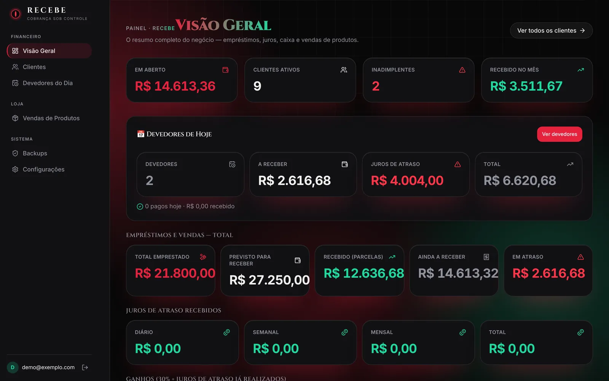
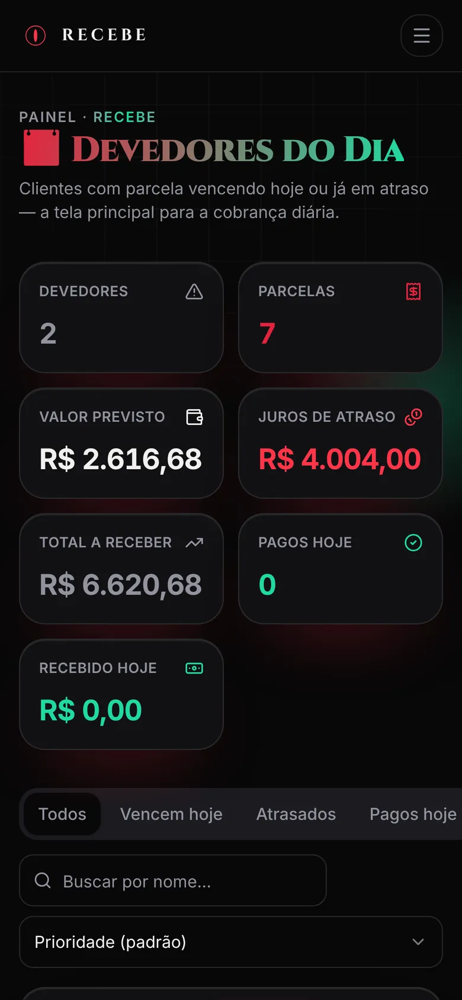

01Sistema de gestão de cobranças e operações financeiras
Cobrança/Recebe
Uma aplicação voltada à organização de cobranças e operações financeiras, com foco no acompanhamento dos registros, na visualização das informações e na organização dos processos do dia a dia.
O problema
Empréstimos e vendas parceladas de iPhones eram acompanhados de forma manual. Era preciso saber, todo dia, quem está devendo, quanto, desde quando, e cobrar sem perder o controle do caixa.
O que já está implementado
- Visão geral com valores em aberto, recebidos, inadimplência e vendas de produtos.
- Cadastro de clientes com empréstimos e vendas parceladas semanais, quinzenais ou mensais.
- Parcelas com registro de pagamentos e cálculo de juros de atraso.
- Tela de devedores do dia, com mensagem de cobrança pronta para o WhatsApp.
- Controle de vendas de iPhones, com estoque, custo e valor de venda.
- Dados isolados por usuário (RLS no Supabase) e backup automático pelo GitHub Actions.
Tecnologias
Ver projeto no GitHub (abre em nova aba)
Em desenvolvimento · uso interno, sem demonstração pública